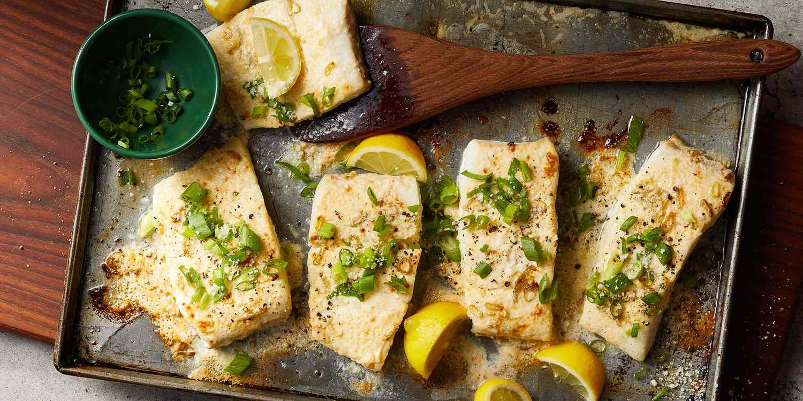

Heavenly Halibut

Description
This easy halibut recipe pairs mild halibut fillets with a rich Parmesan cheese topping.
Perfect for a quick weeknight dinner paired with rice and asparagus, or a crisp green salad.
Ingredients
- ½ cup grated Parmesan cheese
- ¼ cup butter, softened
- 3 tablespoons mayonnaise
- 3 tablespoons chopped green onions
- 2 tablespoons lemon juice
- ¼ teaspoon salt
- 1 dash hot pepper sauce
- 2 pounds skinless halibut fillets
Recipe Instructions
- Set an oven rack about 6 inches from the heat source and preheat the oven's broiler. Grease a baking dish; place halibut fillets in the dish.
- Broil in the preheated oven until fish flakes easily with a fork, about 8 minutes.
- Meanwhile, mix Parmesan cheese, butter, mayonnaise, green onions, lemon juice, salt, and hot pepper sauce in a bowl.
- Remove fillets from the oven; spread Parmesan mixture over top. Return to the oven and broil until topping is bubbly and lightly browned, about 2 more minutes.
Tips
- Place leftover cooked halibut in a shallow, airtight container or wrap it tightly in foil. Store in the fridge for up to three days.
Reheat gently in the oven, as the microwave might make it a little rubbery.